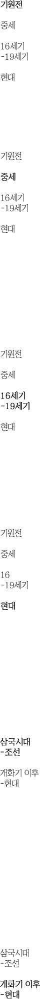

ㅤ인간이 모자를 착용하기 시작한 역사는 분명치 않으나 원시시대에는 추위로부터 머리를 보호하기 위하여 착
용한 것으로 추정되며 그 때부 터 이미 장식을 부착하거나 형태를 달리함으로써 사회적 지위를 구분한 것으로
추정된다. 또한 인간의 문명이 발달하면서 모자 의 용도는 다양하게 발전되어 전쟁시에는 머리를 보호하는
수단으로 투구를 사용하게 되고 평시에는 신분을 상징하는 권위적 의미 로 정착하게 된다. 현대에 와서는
패션의 보조 수단, 자외선으로부터 얼굴보호, 단체의 구분, 운동용구의 보조수단 등으로 널리 정착하게 되었다.
ㅤ기원전 3,000년 이전에 모자에 대한 공식적인 기록은 많지 않지만, 모자를 쓰고있는 여성의 금성 입상
이 발견되기도 하였다. 가장 초기에 실제로 확인 된 모자 중 하나는 기원전 3250년경 오스트리아와 이탈리아
사이의 산에서 얼어 붙은 채 발견된 청동기 시대 남자의 시체에 있었다. 그는 여러 개의 가죽을 함께 꿰매어
만든 턱끈이 달린 곰 가죽 모자를 쓰고 있었고, 본질적으로 플랩이없는 러시아 모피 모자를 닮았다.
고대 메소포타미아 사람들은 종종 원뿔 모양의 모자나 거꾸로 된 꽃병 모양의 모자를 썼다.
ㅤ3200년경 이집트 나일 강가에 형성되었던 테베스의 무덤 벽화에서 밀집모자를 쓰고 있는 남성의 그림이 발
견됐다. 이를 보면, 인류가 모자를 착용한 시기는 그 이전이었다. 기원전 450년 이전, 고대 그리스 초기에 프리
지아 노예들은 그리스와 로마에서 해방 된 이후, 프리지언 모자를 착용하기 시작했었다. 처음 머리를 감싸는
단순한 형태에서 시작되었으나, 시간과 환경에 따라 모자의 틀과 챙도 많은 변화를 보게 되었다. 그리고, 챙을
달아 사용한 최초의 모자는 페타소스인 것으로 전해진다.
ㅤ중세 시대에 모자는 사회적 지위의 표식이었으며 특정 그룹을 구분하는데 사용되었다. 1215년 제 4차
라테 란 공의회에서 모든 유대인은 주 덴핫을 써야하는 대상으로, 반유대주의의 증거였다. 이 모자는 보통 노
랑 뾰족하거나 정사각형이었다.
ㅤ1200년대 중반, 유대인들은 자신들을 기독교인들과 구별하기 위해 뾰족한 모자를 착용했고 동족에게
강요하기도 했다. 다른 초기 모자에는, 혁명적 전쟁 그리고 프랑스 혁명 및 군주제에 대한 자유를 위한 투쟁의
상징으로 착용한 단순한 두개골 모양의 모자와 프리지안 모자가 있으며 그리스와 로마의 해방 된 노예가
착용했다.
ㅤ또한 중세의 이르러 모자는 아름답게 보이려는 여인들의 멋, 머리 장식의 한 형태로 발전했다. 화려하고
다양한 모양으로 패션화 된 것은, 초기 중세, 1400년 경, 에냉(hennin) 모자가 유행하면서 부터이다. 에냉 부인
은 자신의 고안데로, 딱딱한 천을 사용하여, 원추형 모자를 만들어, 머리 뒤쪽으로 기울게 착용했다. 이 원추형
모자 위에 원형의 베일을 덮어 어깨 위로 늘어뜨린다. 여성들을 위해 디자인이 된 것으로, 15세기 중엽까지 전
성을 이루었다. 이 모자는 동화 속의 공주가 착용했었다. 하지만, 여러 불편함으로 인해 자취를 감추었다. 후에
이 모자는 요즈음, 베일이 없어지고, 광대가 착용 할 뿐만 아니라, 더 많이 변형되어 성탄절에 산타크로스
할아버지가 쓰고 있다.
ㅤ여성용 모자는 단순한 스카프부터 정교한 헤닌등이 있었으며, 사회적 지위를 나타낸다.
ㅤ16세기 후반부터 남성 예절과 유사한 구조화 된 여성용 모자가 착용되기 시작했다. 'milliner'라는 용어
는 이탈리아 도시 밀라노, 18 세기에 최고 품질의 모자가 만들어지며 생겼으며 여성용 모자 판매원(Millinery)
는 전통적으로 여성의 직업이었다. 이 직업은 모자와 보닛을 만들뿐만 아니라 의상을 완성하기 위해 레이스,
트리밍 및 액세서리를 제작하기도 하였다.
ㅤ19세기 초경에 들어, 많은 여성들이 챙이 없는 큰 모자를 쓰기 시작했고, 큰 모자에 리본, 꽃, 깃털 등
의 악세사리 장식을 달아 착용했었다. 부, 신분, 미적 감각이 어울려 발전을 거듭하면서, 유럽에서 오랜 세월
동안 모자 스타일에도 많은 변화가 있었다.
ㅤ20세기 초반부터 여성들이 짧은 머리스타일을 선호하게 됨에 따라, 모자도 헬멧처럼 머리를 감싸는 형
식이 되었다. 이 시기부터 새로운 패션스타일의 모자들이 경쟁하듯 쏟아져 나왔고, 다양하고 화려한 형태의
모자들이 나타났다.
ㅤ21세기 초에는 터번 모자를 포함한 창작물을 디자인하는 경쟁적인 젊은 밀러의 새로운 물결과 함께 화
려한 모자가 다시 나타나기 시작했다 효과적인 펠트 모자와 사람의 머리카락으로 만든 긴 머리 장식. 일부 새
로운 모자 컬렉션은 "착용 가능한 조각품"으로 묘사되었다.
ㅤ우리 민족은 일찍부터 옷과 관을 반드시 갖추어 입던 예의민족이었다. ≪삼국지≫ 위서 동이전에 의하면
부여 사람들은 모자를 금·은으로 장식하였고, 고구려에서는 대가주부는 무후책을, 소가는 절풍변을 착용하였다
고 한다. ≪후한서≫·≪남제서≫·≪위서≫·≪북사≫·≪남사≫·≪주서≫·≪양서≫·≪수서≫·≪구당서≫·≪
당서≫·≪한원≫ 등의 문헌에도 고구려 관모에 관한 기록이 보이는데, 이에 의하면 무후책과 절풍변 이외에
절풍건·절풍·책·나관·조우관·조우절풍변·변·피관·자라소골·조우소골·금은녹이무후책등의 모자가 있었
음을 알 수 있다.
ㅤ신라에서는 유자례라고 하는 관과 흑건을 썼다. 통일신라시대에는 남자는 복두와 소립을, 여자는 관을
썼다는 기록이 ≪삼국유사≫에 보인다.
ㅤ고려 때에는 ≪고려도경≫과 ≪고려사≫에 의하면, 면류관·오사고모·복두·조건·사모·고정립·감투·평
정두건·전모·고정모·유각평건·사대문라건·문라건·문라두건·죽관 등의 모자를 썼고, 군인들은 복두·전각복
두·금화대모·투구·문라두건·절각복두·권착복두·피변·피몽수·오사연모·문라건을 썼다고 한다.
ㅤ조선시대에는 왕을 비롯하여 서민에 이르기까지 계급에 따라 다양한 모자가 있었으며 그 유물과 기록
도 많이 전해지고 있다. 조선시대의 모자로는 면류관·원유관·통천관·익선관·전립·복두·공정책·양관·제관·
탕건·초립·감투·평량자·갓·방립·이암·유각평정건·조건·동파관·충정관·정자관·복건·방건·와룡관·유건·
휘항·풍차·만선두리·송낙·고깔·대삿갓·화관·족두리·여자용 전립 등이 있었다.
ㅤ개화기 이후 서구의 영향으로 서구의 모자가 도입되었다. 남자의 모자는 단발령으로 머리에 상투를
틀지 못하게 되면서 시작되었다. 맨 처음에는 관리들이 양복을 예복으로 착용하게 됨에 따라 서구식 모자를
착용하기 시작하였다. 초기 예복의 모자는 영국 예복의 모자를 본뜬 문관의 대례복용 모자이다. 앞뒤가 뾰족
나온 산자형인데 모자 정수리에 장식 깃털이 달려 있었다. 문관의 소례복인 프록코트(frock coat)에는 영국
제 실크 해트(silk hat)를 착용했으며 진사고모라고도 했다. 이후 각종 학교와 기관에서 제복으로 양복을 착
용하게 됨에 따라 서구식의 모자가 사용되었다. 하지만 일반복식에는 양복·한복을 막론하고 서구식 해트류를
착용하였다. 당시에 유행한 모자에는 파마나 모를 비롯해 중절모·중산모 등이 있으며 중절모는 1970년대까
지도 노인들이 한복에 중절모를 쓴 모습을 쉽게 찾아볼 수 있었다. 그러나 1960년대 서구에서 남자들의 모자
착용이 줄어들면서 우리 나라에서도 일반인의 모자착용이 줄어들었고, 1980년대 중·고등학생의 교복이 폐지
됨에 따라 일제식 교복과 교모도 사라지게 되었다.
ㅤ오늘날에는 군인·경찰 등의 제모와 머리를 보호하기 위한 헬멧(helmet), 방한모, 각종 운동모 등이 주로
사용되고 예의를 갖추기 위해 모자를 착용하는 경우는 드물게 되었다. 여자의 모자는 1899년 여자의 양장
과 함께 들어왔지만 서구문화의 영향을 직접적으로 받은 특수층에 한하였다. 여성관의 변화로 일반여성들은
외출 시에 장옷이나 쓰개치마를 벗을 수 있게 되었고, 그 대신 조바위·아얌 등을 착용하게 되었다. 하지만 양
장 착용인구가 증가하면서 조바위나 아얌도 사라지게 되었다. 20세기에 우리 나라에서 착용된 모자는 서구에
서 도입된 각종 양식이 있었지만 정장에 모자를 쓰는 규범은 차차 사라지게 되었다. 다음은 우리 나라에서 사
용한 대표적인 서양모자의 종류이다.